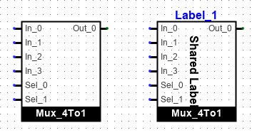
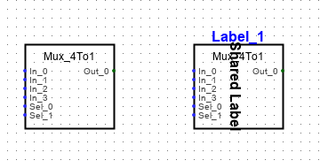
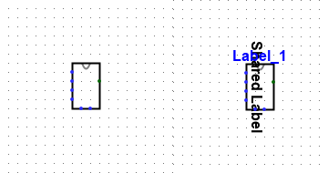

Внешний вид подсхемы
Стандартные варианты представления
В Logisim-evolution предусмотрено четыре базовых стандарта графического отображения подсхем на чертеже: «Классический Logisim» (Classic), «Logisim-HolyCross», «Logisim-evolution» и «Пользовательский» (Custom). Требуемый вариант выбирается в таблице атрибутов схемы с помощью свойства Внешний вид (Appearance).
Стандарт Logisim-evolution: Подсхема отрисовывается в виде прямоугольника со сплошной чёрной полосой в нижней части, внутри которой выводится название схемы. Габариты графического корпуса автоматически адаптируются под содержимое, если атрибут Фиксированный размер рамки установлен в значение «Нет». Входные контакты располагаются на левой стороне, а выходные — на правой, строго в порядке их размещения на внутреннем чертеже (сортировка слева направо и сверху вниз). Точка привязки (якорь) по умолчанию устанавливается на крайнем верхнем левом контакте.

Стандарт Logisim-HolyCross: Подсхема отображается в виде прямоугольника, где название схемы размещается в верхней части рамки. Входы также располагаются на левой стороне, а выходы — на правой. Порядок распределения контактов подчиняется тем же правилам, что и в стандарте Evolution.

Стандарт Классический Logisim (Classic): Подсхема формируется в виде минималистичной прямоугольной рамки без отображения названия. Размеры корпуса зависят исключительно от количества входных и выходных контактов. Контакты распределяются по всем четырём сторонам строго в соответствии с их атрибутом «Направление» (Facing) на внутреннем чертеже схемы. Якорь располагается на крайнем верхнем левом контакте.

Отредактировать индивидуальную текстовую метку размещённого экземпляра подсхемы можно двойным щелчком левой кнопки мыши по её корпусу. Позиционирование и атрибуты шрифта для этой метки настраиваются в панели свойств. В этой же таблице можно задать базовое значение свойства Метка (Label), которое будет применяться по умолчанию ко всем новым экземплярам данной схемы.